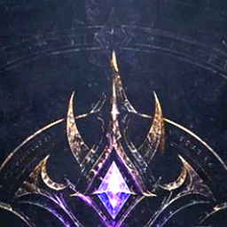

NYXIA ONLINEHesabını ve Verilerini Sil
Nyxia Online · Son güncelleme: 10 Ekim 2026
Yöntem 1: Oyunun içinden (anında)
- Nyxia Online'a giriş yap.
- Sağ üstteki Ayarlar (dişli) simgesine dokun.
- Hesap sekmesini aç ve Hesabımı sil'e bas.
- Şifreni gir ve Kalıcı olarak sil'e bas.
Hesabın o anda silinir ve oturumun kapanır. Bu işlem geri alınamaz.
Yöntem 2: Oyuna giremiyorsan (e-posta ile)
onlinenyxia@gmail.com adresine "Hesap silme talebi" konusuyla; kullanıcı adını ve karakter adlarını yazarak mail at. Hesabına doğrulanmış bir e-posta eklediysen o adresten yaz, böylece hesabın sana ait olduğunu doğrularız. Eklemediysen hesabın sana ait olduğunu doğrulamak için senden oyun içinde bir karakter adını geçici olarak bizim vereceğimiz bir koda çevirmeni isteyebiliriz. Talebini en geç 30 gün içinde tamamlarız.
Neler silinir
- Hesabın, şifre hash'in ve tüm oturumların.
- Tüm karakterlerin, envanterin, deponun, altın ve elmasların, görev ve başarımların (sunucu yedeği).
- Arkadaşlıkların ve istekler, özel mesajların, genel sohbet mesajların, engel listen.
- Pazar tezgâhın, düello ve boss kayıtların, bildirim abonelikların.
- Klan üyeliğin. Klan lideriysen liderlik sıradaki üyeye geçer; klanda başka kimse yoksa klan da silinir.
- Hakkında yapılmış şikayet kayıtları.
Neler kalabilir
- Günlük yedekler: silinen hesabın verileri en geç 14 gün içinde yedeklerden de kaybolur.
- Başkaları hakkında yaptığın şikayetler: kimliğin kaldırılarak (anonim) moderasyon kaydı olarak saklanabilir.
- Mağaza kayıtları: Apple veya Google ile yaptığın satın alımların kayıtları o şirketlerde kalır; bunları biz silemeyiz.
- Cihazındaki yerel oyun kopyası: uygulamayı kaldırarak silebilirsin.
Ayrıntılar için Gizlilik Politikası'na bak.
Delete Your Account and Data
Nyxia Online · Last updated: October 10, 2026
Option 1: From inside the Game (instant)
- Sign in to Nyxia Online.
- Tap the Settings (gear) icon at the top right.
- Open the Account tab and tap Delete my account.
- Enter your password and tap Delete permanently.
Your account is deleted immediately and you are signed out. This cannot be undone.
Option 2: If you cannot access the Game (by email)
Email onlinenyxia@gmail.com with the subject "Account deletion request", including your username and character names. If you added a verified email to your account, write from that address so we can confirm the account is yours. Otherwise we may ask you to temporarily rename a character in the Game to a code we give you, to prove the account is yours. We complete requests within 30 days.
What is deleted
- Your account, password hash and all sessions.
- All characters, inventory, bank, gold and diamonds, quests and achievements (the server backup).
- Friendships and requests, private messages, public chat messages and your block list.
- Your market stall, duel and boss records, and push subscriptions.
- Your clan membership. If you lead a clan, leadership passes to the next member; if nobody else is in it, the clan is deleted too.
- Reports that were filed about you.
What may remain
- Daily backups: a deleted account's data also disappears from backups within 14 days at most.
- Reports you filed about others: may be kept as an anonymized moderation record.
- Store records: records of purchases made through Apple or Google stay with those companies; we cannot delete them.
- The local game copy on your device: remove it by uninstalling the app.
See the Privacy Policy for details.